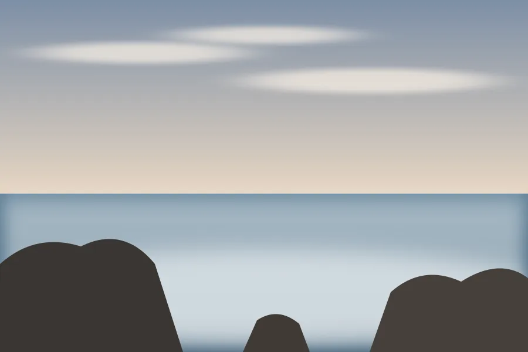

Most filters from the film days have been replaced by editing. A few still matter, because they change the light before it reaches the sensor, and no slider can undo that. They come as round filters that screw onto the front of the lens, or as square ones that slide into a holder.
Polarising filters
A circular polariser cuts reflected light. Turn it while you look through the camera and you’ll see reflections on water and glass fade away, so you can look into a lake or through a shop window. It also takes the shine off leaves, which makes foliage look richer, and it darkens a blue sky.
The effect on the sky is strongest when the sun is at ninety degrees to the direction you’re shooting. With a very wide lens that angle changes across the frame, so the sky can turn patchy, darker on one side than the other. A polariser also costs you one or two stops of light.
Neutral density filters

A neutral density filter, or ND filter, is simply dark grey glass. It cuts light without changing colours, so you can use slower shutter speeds or wider apertures in bright conditions. A three-stop ND turns 1/125 s into about 1/15 s. A ten-stop ND turns 1/30 s into about 30 seconds, long enough to smooth water into mist and make clouds streak across the sky.
Focus and compose before you put on a strong ND, because the view through the camera goes very dark. Use a tripod and a two-second timer. Cover the viewfinder eyepiece too if your camera has one, since stray light leaking in can show up as haze.
Graduated filters
A graduated ND filter is dark at the top and clear at the bottom. Line up the transition with the horizon and it holds back a bright sky while leaving the land untouched, so both fit into one exposure. Hard-edged versions suit flat horizons like the sea. Soft-edged ones suit hills and trees. Many photographers now get the same result by bracketing exposures and blending them in editing.
Protective filters
A clear or UV filter on the front of the lens mostly works as a shield against scratches and sea spray. Digital sensors don’t need UV filtering. If you use one, pick a good one, because a cheap filter adds flare and softens the picture. A lens hood protects the front of the lens nearly as well and improves contrast at the same time.
Exercises
Exercises N1–N4. Tick each one off when you’ve tried it. Your ticks stay on this phone or computer.
- N1
Reflections
Photograph a pond or a shop window while slowly turning a polariser. Take one picture at the weakest setting and one at the strongest.
- N2
Blue sky
On a clear day, photograph the sky in four directions with a polariser and see where the effect is strongest.
- N3
Silky water
With an ND filter and a tripod, photograph moving water at 1/250 s, 1/4 s, 2 s and 30 s. Compare the textures.
- N4
No filter needed
Shoot a sunset as a bracket of exposures and blend them in editing. Compare the result with a single exposure.
Photography Handbook, © 2026 Samskara Photo Club. Text and illustrations are licensed under CC BY-NC-SA 4.0. You may share and adapt them for non-commercial use if you credit the club and share your version under the same licence. Commercial use needs the club’s permission. The club logo is not covered by the licence.